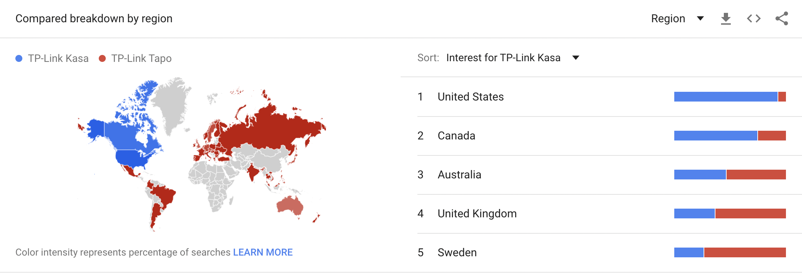
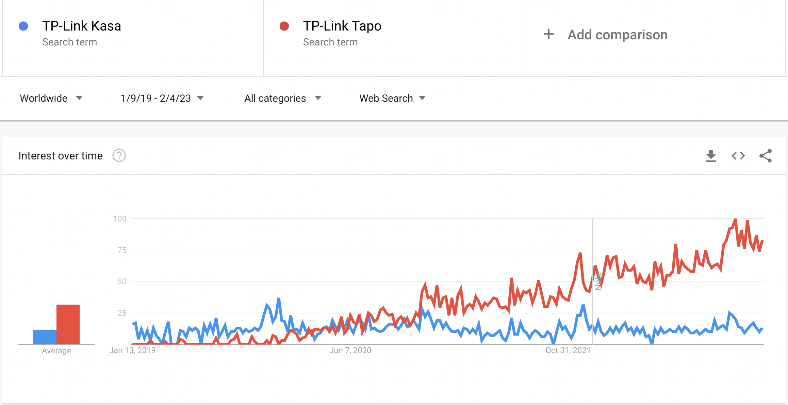

Kasa Smart vs Tapo: The Battle for Smart Home Dominance
Kasa Smart and Tapo are two popular smart home brands offered by TP-Link. While both brands offer a wide range of smart devices such as smart plugs, smart bulbs, and smart cameras, each has its unique features and strengths.
In terms of market presence, Kasa Smart has a stronger presence in the North American market, while Tapo is more popular in Europe and Asia. Kasa Smart has a stronger presence in the North American market, meaning that the brand has a higher visibility, wider product range and has made more significant headway in terms of customer acquisition in this region. On the other hand, Tapo is more popular in Europe and Asia, with a strong customer base in these regions. This is likely due to factors such as local market demands, customer preferences, marketing efforts, and distribution channels. But also because Kasa's development team is based in the US, Tapo's development team is based in Asia.
We can see in this comparison by region of Google trends that the regions are well defined. This is reflected in the number of downloads for each brand's respective app. The Kasa Smart app has been downloaded over 5 million times on the Google Play Store, while the Tapo app has been downloaded over 10 million times.
This indicates that Tapo is more popular or in higher demand among online users who use Google search. The higher search interest for Tapo can be attributed to a number of factors, such as effective presence in local stores and region websites, product innovation, user satisfaction, or brand recognition. (It's worth noting that Google Trends only provides an estimation of the search interest, and does not reflect the actual sales, market share, or user base of the two brands. Nevertheless, the search interest can provide valuable insights into the brand popularity and consumer behavior).
When it comes to product offerings, Kasa Smart offers a larger selection of smart home devices, including energy monitoring smart plugs, smart bulbs, and smart cameras. Many of the device offerings compete with each other and it is sometimes difficult to understand what the differences between the devices are, for example, Kasa's Smart Switch offer has 9 more devices with different models but many of them seem to have the same functionality. Tapo, on the other hand, focuses on affordability and simplicity, offering a smaller selection of smart plugs, smart bulbs, smart cameras and sensores at a more budget-friendly price point but with growth path of new devices.
Both Kasa Smart and Tapo offer easy-to-use apps for controlling their devices and integrating with other smart home platforms. However, Tapo offers more modern app and adding new lines of products, has recently introduced a new line of smart home devices that includes temperature sensors, movement sensors, and door/window sensors. Tapo focuses on simplicity and affordability, while Kasa focuses on good hardware with many years of experience. For example, Kasa's devices for controlling energy consumption have a much higher accuracy than Tapo's. In the North American market, Tapo has a limited number of devices compared to rest of the world this may be happening because perhaps there is a non-competition agreement between the two brands.
In conclusion, both Kasa Smart and Tapo offer quality smart home devices that can help simplify your life and make your home more energy efficient. The brand that is right for you will depend on your specific needs and preferences. If you are living in North America, Kasa Smart may be the better option. If you're living out North America and looking for budget-friendly, simple-to-use smart devices, Tapo may be a better fit.
If you have devices from Kasa or Tapo you gonna need the Watt for Smart Devices app. This app is designed to work seamlessly with both Kasa Smart and Tapo devices, allowing you to manage and control your smart devices from a single, user-friendly platform. Whether you have just a few smart devices or a whole home full of them, the Watt for Smart Devices app makes it easy to manage everything from your iPhone, iPad or macOS. With its intuitive interface, detailed device status updates, this app is the ultimate tool for anyone looking to take control of their smart home. So why wait? Download the Watt for Smart Devices app today and start experiencing the future of smart home technology!